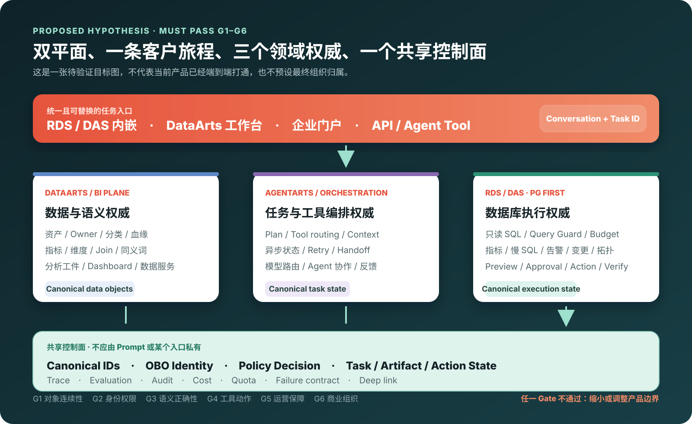
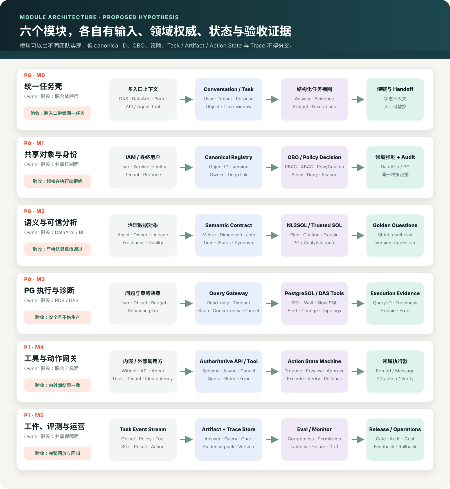

不是从零建设
DataArts Studio / Insight、AgentArts、RDS、DAS、DRS、IAM、APIG 等已经覆盖数据、分析、编排、数据库和接入的若干能力面。
HUAWEI DATA INTELLIGENCE × DATABASE AGENT
DataArts、AgentArts、RDS 与 DAS 不是“有没有功能”的问题，而是同一客户任务能否共享对象、最终用户权限、执行状态、分析工件和证据链。当前建议以 PostgreSQL 为首个执行引擎，验证“双平面、一条客户旅程”。
EXECUTIVE VERDICT
公开资料证明华为云已有多类数据、BI、Agent 和数据库能力；但没有证明它们形成统一任务闭环。组织结论必须晚于端到端验证。
DataArts Studio / Insight、AgentArts、RDS、DAS、DRS、IAM、APIG 等已经覆盖数据、分析、编排、数据库和接入的若干能力面。
资产、指标、用户身份、策略、任务、工件、Query ID、Trace 和评测是否能在同一任务中贯通，必须在目标账号实测。
DataArts 管数据语义，RDS/DAS 管数据库执行，AgentArts 管任务编排，共享控制面提供身份、状态、策略、证据与运营。
BENCHMARK SCOPE
“对标”不是复制产品名称，而是对齐客户可感知的任务闭环。状态来自公开资料与分析，账号实测前不写成现网承诺。
| Databricks 参照能力 | 客户价值 | 华为可复用基础 | 当前动作 | 目标程度 |
|---|---|---|---|---|
| Unity Catalog资产、权限、血缘、审计 | 一个受治理对象跨分析与 Agent 复用 | DataArts 治理、IAM、各服务元数据 | 整合验证 | 稳定对象 ID + OBO + 执行端策略 + 共享审计 |
| Metric Views / 语义指标、维度、Join、口径 | 业务问题不用每次重写 SQL 语义 | DataArts Insight / 数据语义能力 | 重点补强 | 版本化语义合同，可被 BI、Agent、PG 查询共同消费 |
| Genie / AI/BI问答、追问、结果、工件 | 业务用户直接完成分析任务 | DataArts Insight 智能问数相关入口 | 重点补强 | 问题 → 受控执行 → 引用 → 保存工件 → 继续任务 |
| Lakeflow / 数据工程接入、同步、质量、血缘 | 可信数据持续进入分析面 | DataArts Studio、DRS 等 | 直接复用 | 数据库团队不重建；只补水位、对象和证据接口 |
| SQL / Lakebase 执行面查询、事务、引擎上下文 | 结果新鲜、可复算且不伤生产 | RDS PostgreSQL、DAS、DWS 等 | 数据库主责 | 只读查询、Query Guard、诊断、预算、预演和动作验证 |
| Agent Runtime / Apps编排、工具、应用入口 | 跨数据、文档、工单和动作完成任务 | AgentArts、APIG、企业应用平台 | 整合验证 | 权威 API/Tool、异步状态、失败恢复与最终用户上下文 |
| Benchmark / Monitor评测、反馈、版本与追踪 | 发布前可判定，发布后可运营 | 分散的监控、审计与 Agent 运营能力 | 共建控制面 | Golden Questions + Trace + Eval + Audit + Cost 同一任务 ID |
| Managed Tool / 外部入口API、Agent Tool、MCP 类适配 | 伙伴不用复制权限、语义和查询逻辑 | APIG、AgentArts 工具接入、数据服务 API | 共建合同 | API 为权威；Widget/CLI/MCP 仅做适配，权限结果一致 |
| 模型训练与通用推理MLOps / GPU / Serving | 本项目不是购买决策重点 | 华为云既有 AI 基础设施 | 本方向不对标 | 只定义 MaaS 接口、模型路由和数据不出域边界 |
客户旅程、对象连续性、语义合同、受控执行、工件、评测、内嵌与外部入口。
Databricks 的产品包装、湖仓存储实现和组织边界；Unity Catalog 也不能被简化成一个新微服务。
通用模型训练、GPU 调度和大规模推理基础设施，只要求通过 MaaS 合同接入。
TARGET HYPOTHESIS
统一入口可以放在 RDS/DAS、DataArts 或企业门户；它必须是可替换的壳。真正不可分叉的是共享控制面和领域权威合同。

PRODUCT MODULES
优先级是当前方案假设：P0 先证明对象、身份、语义和安全执行；P1 再形成工件、评测与外部工具；动作自动化最后进入风险 Gate。
从 DAS 的告警、DataArts 的指标或企业门户进入，都能继续同一个任务，不用在多个产品间复制问题和截图。
同一任务可从 DataArts 跳到 DAS 再返回，用户、对象、时间窗口、执行和工件引用不丢失。
业务用户和外部 Agent 看到相同权限结果；审计能回答“谁以谁的身份，对哪个对象做了什么”。
至少通过正常、越权、对象改名、权限撤销和跨入口五类回归；Prompt 不能覆盖策略判定。
“已完成退款”“毛利”“P1 未解决”在问答、Dashboard、API 和 PG 查询中是同一个口径。
一个领域先达到可版本、可引用、可评测、可追溯；不以“SQL 能执行”替代结果正确。
实时订单状态与数据库风险能安全进入业务任务，同时不伤主库、不泄露敏感数据、不让模型直接修库。
PG-first 通过真实负载保护与故障注入；多引擎只复用合同，方言、权限、诊断和评测分别验收。
企业门户、ISV 和外部 Agent 可以安全复用问数与诊断，并把退款、Kill、改参数等高风险动作送进同一审批链。
内嵌与外部入口对同一用户返回相同权限和语义结果；写动作默认关闭，逐动作过风险 Gate。
答案可保存、复算、分享和继续；产品团队能知道版本升级后哪些问题退化、哪一步失败、成本在哪里。
一条真实任务可从用户问题回放到每个对象、策略、SQL、结果和动作；版本变更前后可自动回归。

BUSINESS-FIRST STORIES
首批故事以业务价值排序。DBA 效率是必要能力，但真正推动客户购买的是收入、客户体验、风险窗口和产品上市速度。
“华南支付成功率为什么从 99.2% 降到 96.8%，哪些商户和订单受影响，现在应先做什么？”
“昨晚升级后，哪些 VIP 客户退款失败且工单超过 SLA？按已批准退款口径总额多少？”
“这个索引和参数变更会影响哪些高价值业务？窗口内是否可执行，失败如何回滚？”
“让我们的每个租户在自己权限下问经营数据，并能把答案保存为报告，需要重建什么？”
EMBEDDED VS EXTERNAL
最重要的原则是：入口不成为第二套事实和权限系统。内嵌体验靠上下文取胜；外部 Agent 靠标准合同、最终用户身份和稳定状态取胜。
G1–G6 VALIDATION
每个 Gate 都有停止条件。公开文档、原型和局部 Demo 不能替代目标账号中的端到端证据。
选择一个 PG 数据域，验证 DataArts 资产/指标、Agent 任务、DAS 查询和最终 Artifact 的 ID、版本、Owner 与深链。
不过：统一产品叙事不成立覆盖浏览器用户、服务身份、外部 Agent、权限撤销、越权字段与审计关联。
不过：只能停留在封闭内嵌场景建立真实问题、可信 SQL、严格结果真值和语义版本变更回归，比较 DataArts、DAS 和 API 结果。
不过：不能承诺业务问答产品验证查询、诊断、Artifact 和一个低风险动作的 API/Tool、异步、取消、幂等、预演、审批与验证。
不过：外部 Agent 只提供只读查询打通 Task ID、对象、策略、SQL、Query ID、结果、Artifact、Eval、Audit、Cost，并注入超时、撤权和工具失败。
不过：不可规模化发布用设计伙伴基线、可量化业务结果、WTP、采购路径、RACI、SLA 和成本模型选择产品归属。
不过：缩为能力包或专业工作台产品归属决议 · P0/P1 模块边界 · 模块目标架构 · 按依赖与难度排序的 OKR · 里程碑与资源模型 · Go / Shrink / Stop 条件
FOUR OWNERSHIP OPTIONS
当前只优先验证 C，不预设最终选择。四个选项都必须解释统一入口、共享控制面和领域能力由谁承担。
适合跨产品对象、身份和语义确实无法复用，且客户主要为数据库工作流付费。
最大风险：重复建设治理、BI 和 Agent适合 DataArts 能承接统一入口、语义、工件和外部工具，数据库只需提供高质量执行能力。
最大风险：数据库深度和高风险动作被弱化三个领域权威共享对象、身份、任务和证据；以一条客户旅程而不是一个组织边界对外。
最大风险：跨团队 RACI、SLA 和发布节奏不建设统一总入口，以标准 Tool/API、身份、Artifact、Trace 与评测包嵌入各专业产品。
最大风险：客户旅程继续碎片化DESIGN MATERIALS
独立探索中的追赶计划和 UI 原型是用于评审的产品设计假设；历史 RDS 90 天方案保留为研究演进证据。
按市场差距形成的产品路线草案，待 G1–G6 修正。
[方案假设]统一入口与专业工作台 UI 原型用于讨论体验和对象交接，不代表已开发页面。
[完整文字]产品模块与追赶计划研究稿查看模块细节、依据、Unknown 和推断。
[PHASE 1 历史方案]RDS 双引擎 90 天落地手册保留早期思路；不再作为当前立项承诺。
可用于解释为什么早期方案过早收敛；其中 MySQL/PG 双引擎、五个新增服务、固定 90 天和 KPI 已被独立调研降级为待验证假设。
EVIDENCE & BOUNDARY
本页的华为能力判断来自公开资料研究，没有登录华为云目标账号做跨产品实测。产品状态、区域、版本和权限可能变化。
官方外部视频
现场按听众选择 DataArts Insight 或 RDS PostgreSQL 官方视频；本页的统一入口、共享控制面与联合产品仍是待验证方案。
必须保留的边界：没有目标华为云账号观察、跨产品接口调用、真实租户越权测试、端到端 Trace 或设计伙伴商业验证；因此页面中的共享控制面、模块优先级和产品归属都属于待验证建议。
{kind=link}